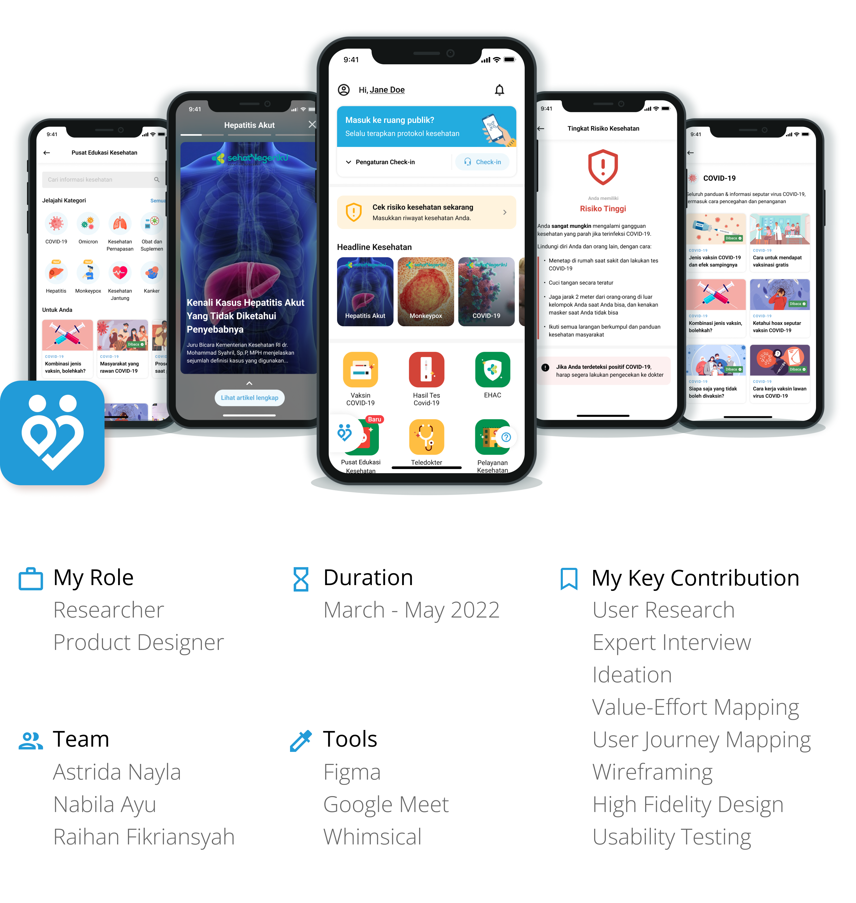
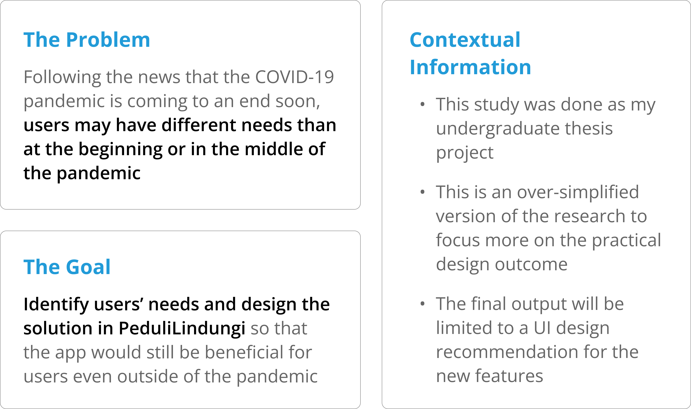
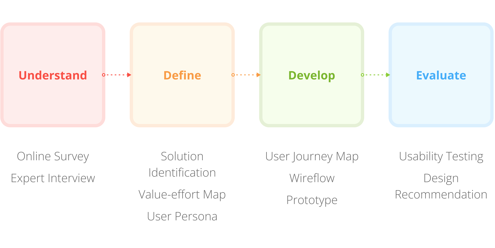
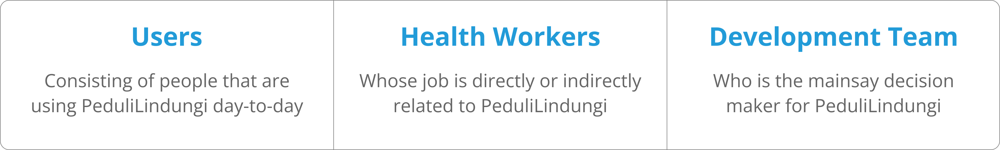
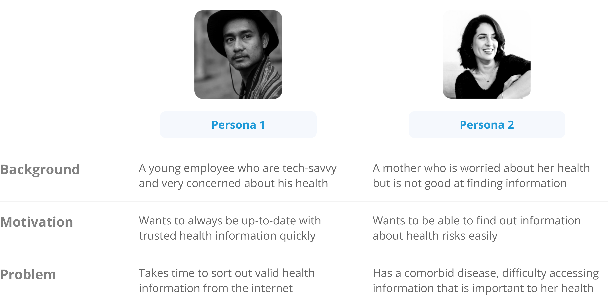
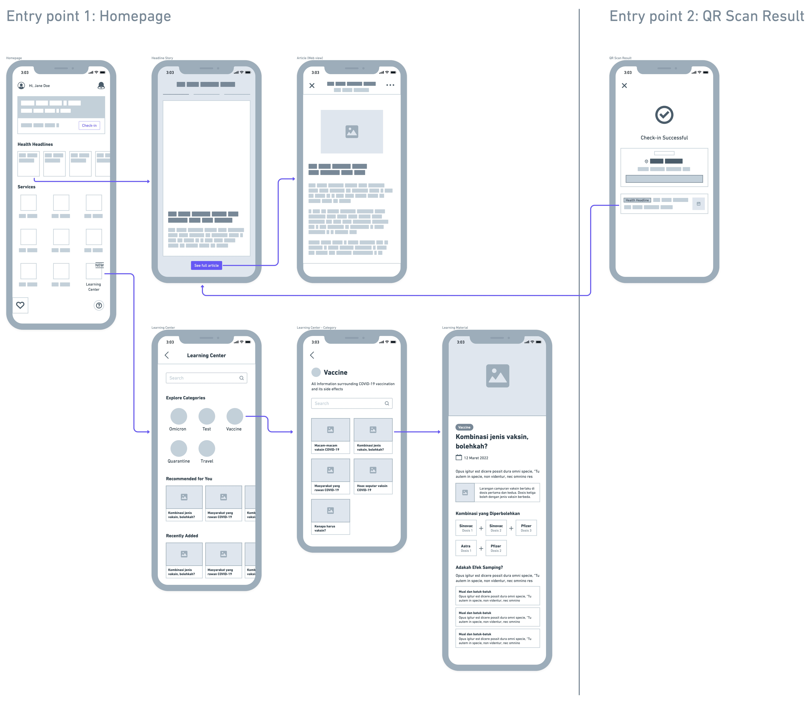

PeduliLindungi

Background
PeduliLindungi, Indonesia's COVID-19 digital contact tracing app, is crucial in reducing the spread of the virus during the pandemic. A lot of people have adopted the app, thus enabling it to potentially be the one healthcare platform in Indonesia.

Project Outcome
This is the system usability scale (SUS) score we got for the new features:
👍 78 / 100
it means that the feature suggestion was "good" and "acceptable" for the users. The following process is how I achieved it and proposed the improvements based on it ✨
Design Process
Current Screens
To give more context, here is a glimpse of PeduliLindungi's current UI.
The key features include:
- Contact tracing with QR code and Bluetooth
- COVID-19 vaccination status
- COVID-19 test result
- eHAC integration
- Telemedicine
- Healthcare facility finder
- COVID-19 statistics
📌 The features mentioned above are heavily oriented towards handling COVID-19, which could become useless when the pandemic is no more. Hence, we need to first identify the user's needs so that PeduliLindungi could be more sustainable in the long run.
Understanding the Stakeholders
While users have the highest priority, we also need to understand that they aren't the only stakeholders. The stakeholders that are a part of PeduliLindungi's ecosystem whose opinion we need to consider are:
In order to empathize with them, we went through two steps of process.

Identifying the Problems and Solutions
Problems are identified from relevant insights gathered in the online survey and expert interview by considering their values and the scope of this research.
People are getting ignorant about the impact and development of the COVID-19 pandemic
Although health information is one of the driving factor of PeduliLindungi's usage intention, users no longer cared much about the benefits of the app or about the possibility of infection from COVID-19. Besides that, users still have concerns about infecting others.
Proposed solution: Add a page or section containing official and relevant information about COVID-19 that is presented in an attractive way.
Queues in public places, especially at health facilities, can create crowds that are prone to the spread of COVID-19
Users picked this as one of the top issues we should handle. Experts also believed that it was important to implement remote queues at health facilities to prevent crowds.
Proposed solution: Add a remote queuing feature for health services, where users can monitor their queues through the PeduliLindungi application.
People are not aware of the health risks they have against COVID-19 based on their medical history
Experts said that most people don't know their risk of COVID-19, especially people with comorbidity. This is the main cause of complications from COVID-19. Having an awareness of their medical history is also important to estimate health risks from other deseases.
Proposed solution: Add a medical record feature, where users can view and enter their medical history and get a health risk assessment.
Value-effort Mapping
Because of our limited resources, not all of the proposed solutions are able to be designed. Thus, we prioritize the feature suggestions based on its value to users and effort expended by organization.

Health information feature and medical record feature are chosen to be designed in this study. We believe that those features could be highly beneficial for users even outside of the COVID-19 pandemic. On the other hand, the remote queuing feature was valued lower because its functionality would mostly be useful only during the pandemic.
Defining User Personas
Based on the analysis of the online survey and expert interview results, two personas from PeduliLindungi users were obtained with two different characteristics.
These user personas were kept in mind throughout the design development of the chosen feature suggestions. The health information feature would be tailored according to Persona 1, whereas the medical record feature would cater to Persona 2.
Note: From here, I would only focus on the design process of the health information feature so it'll be easier to follow.
Brainstorming Opportunities
After defining the user persona, we did a brainstorming session to present each of our ideas and explore the opportunities we could implement in the feature's UI/UX that would suit it. Here's a sneak peek of our brainstorming space:

During our brainstorming, we realized that health information could be classified into 2 types: news and educational. Each of those needed to be treated accordingly. Health news information is more urgent in delivery, so the design will prioritize discoverability aspects. On the other hand, health education information would emphasize clarity of information.

Open PeduliLindungi
HMW improve the discoverability of the feature?
- Add news sneak peek in QR scan result
- Show the news highlight in short chunks like instagram story
Find the health information he’s looking for
HMW help him find the info he needs?
- Add filter, search bar, and categorization features to make finding information easier
Read about health information
HMW make the info section look interesting?
- Highlight the important information inside education articles in diagrams, illustrations, etc
Wireframing & Prototyping
After exploring the opportunities we could implement on each step of the health information feature, we then proceed to make the rough outline in the form of a wireframe.
There are some minor differences in the UI that were not shown in the wireframe, but nevertheless, the images below show the high-fidelity design of the new feature.
Health headlines in the form of stories to support high discoverability and engagement
Each category of health headlines is curated from verified sources with digestible chunks of information and users can opt to view the full article if they want
Health headline sneak peek is added to the QR scan result page to bump up its discoverability, since users mostly use that functionality in PeduliLindungi
Health education information is added in the new menu "Pusat Edukasi Kesehatan"
Pusat Edukasi Kesehatan has a clean interface with search bar and categorization to ease information finding
A fun and engaging article page that get users to absorb information better
Learnings
The one lesson I've found quite astounding from this project is how identifying the right entry point is critical to achieving a high adoption rate. Although the SUS score "acceptable" is above average, our final design didn't get a better score because the users deemed most of the entry points hard to find. If this happens in the real implementation, the feature would fail to meet its fullest potential. Thus, when introducing new functionality to the users, it's important to give more attention to its entry point's discoverability.